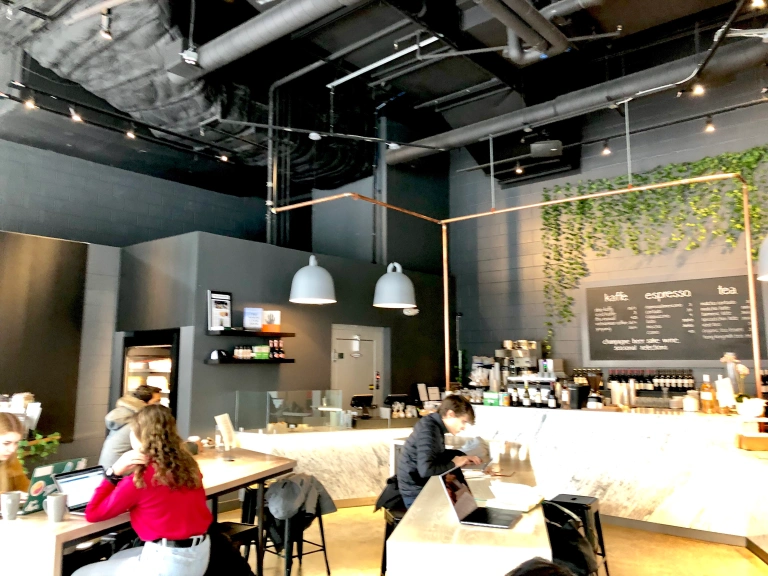
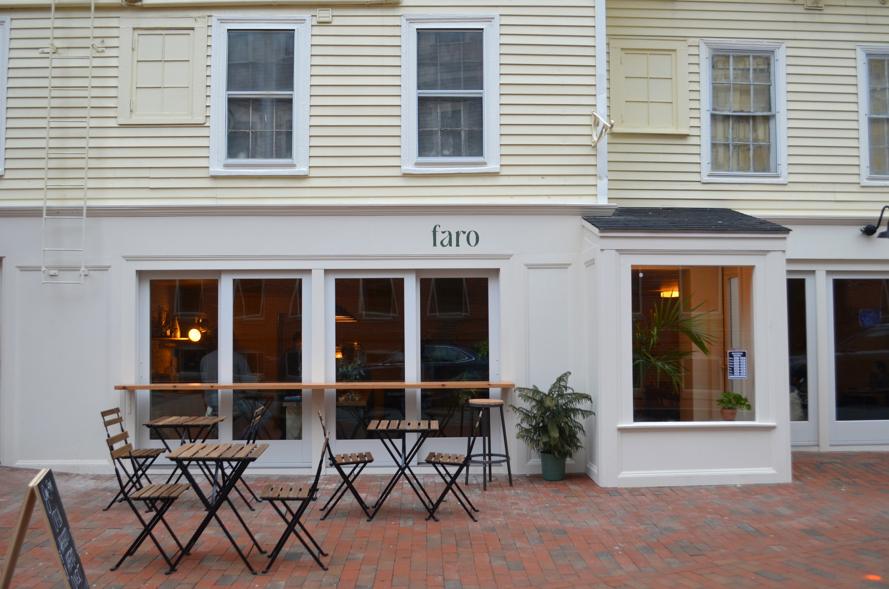
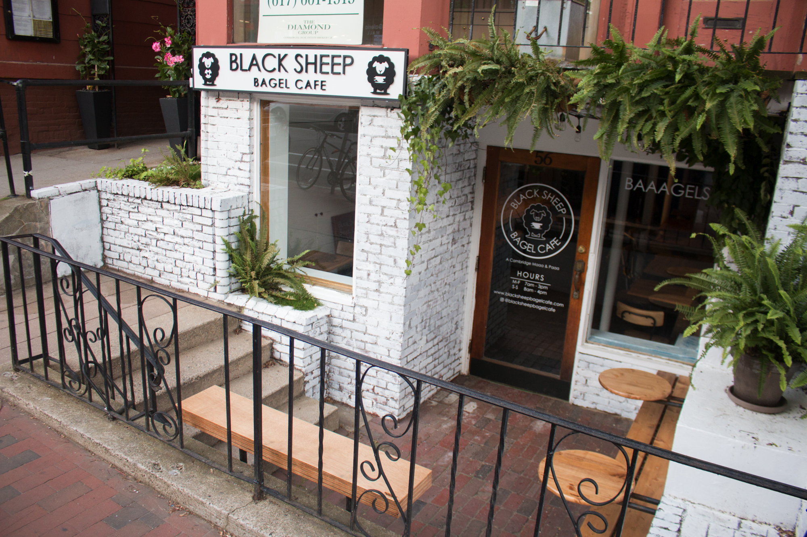

Vester Cafe- The newest, hippest, women-owned cafe in the Cambridge area! All the team members there are awesome and so friendly. They update their menu constantly so there is never a dull menu! They have fun unique drinks such as a Oreo Latte and Ube Lattes. The drinks are sweet and tasty and they are also a great place to go for food and sandwiches as well!

Faro Cafe- Brand new adroable and aesthetic cafe youre going to want to check out. If I were to design my home it would look like this!! Plants are everywhere and the seating if cozy. It can can get packed at random times because of the neighboring colleges and offices. A perfect place to stop and get some coffee and a croissant!

Black Sheep Bagel- This place is more of a food spot than a coffee shop but I included it anyway because their bagels are fantastic and their coffee is decent and hits the spot. It is located underground which gives a cool atmosphere and there are many plants hanging around. I would not go here to sit as there is not much space, so take your bagel to the park!